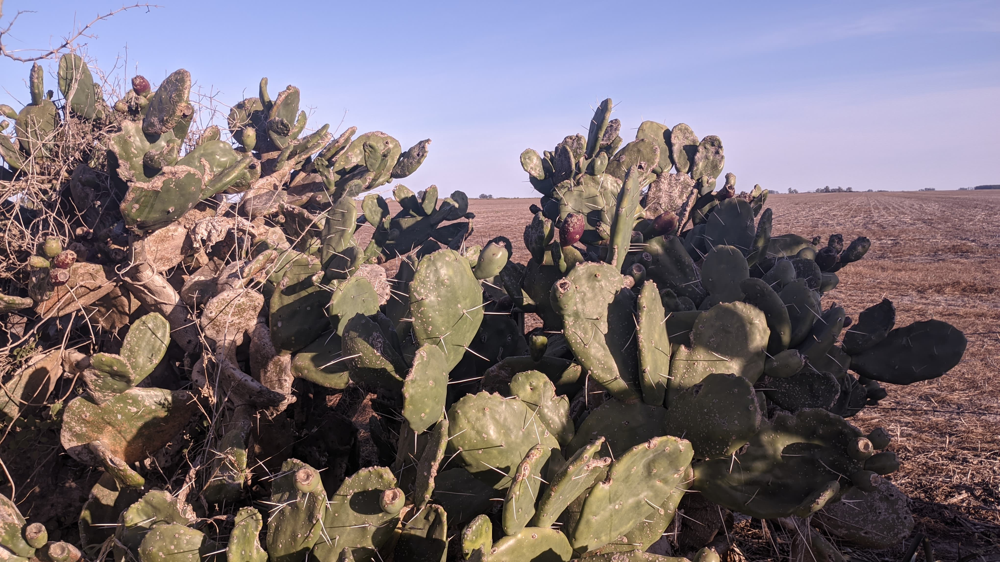
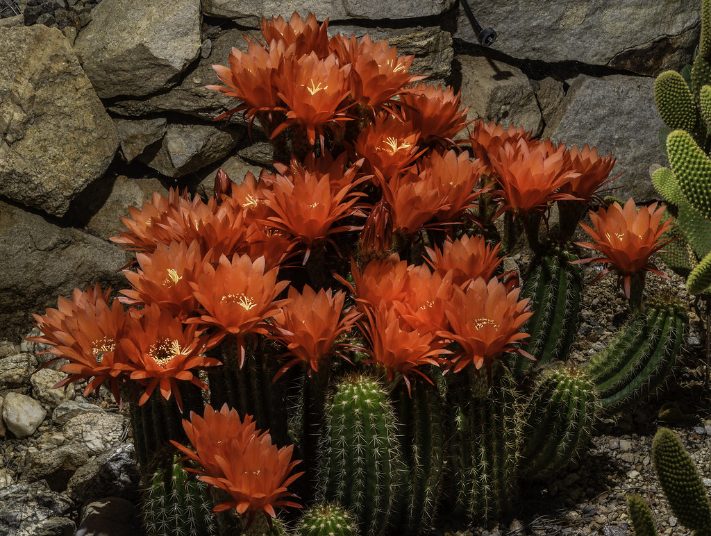

El género Echinopsis es famoso por sus grandes flores, que florecen una vez al año. De forma tubular y muy bellas, lamentablemente no duran mas de un día o dos.

La especie Gymnocalycium Marsoneri puede crecer en la sombra. Se reproduce asexualmente de manera vigorosa si es cultivada en el hogar.

El Opuntia, tambien llamado Nopal, produce frutas comestibles. Son bastante ricas, y una buena fuente de magnesio.

Los Cactus estan relacionados con las remolachas. Es por esto que pueden producir Betalaina: pigmentos rojos que la mayoría de las plantas no poseen.